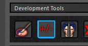
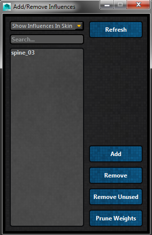

ART_AddOrRemoveInfluences¶
Author: Jeremy Ernst
-
class
Interfaces.ART_AddOrRemoveInfluences.ART_AddOrRemoveInfluences(mainUI)[source]¶ This class is used to list influences in or out of the current skinCluster, and then remove or add said influences given current selection.
- It is called from this button, found after finalizing your setup:
- 
- This is what the full interface looks like:
- 
-
__init__(mainUI)[source]¶ Instantiates the class, taking in the instance of the rig creator skin tools interface. Get settings values from QSettings. Build the interface.
Parameters: mainUI – Instance of the skin tools interface.
-
addOrRemoveInfs_RefreshSelection()[source]¶ Regenerate the lists comparing all joints of the rig to joints in the skin cluster and joints not in the skinCluster. Clear the listWidgets and refresh with new data.
-
addOrRemoveInfs_Search()[source]¶ Hides all items in the QListWidget, then compares the QLineEdit search text with each item in the QListWidget, and if the search text is found in the text of an item, show that QListWidgetItem.
-
addOrRemoveInfs_ShowInfsFilter()[source]¶ Change what is displayed in the QListWidget based on the QComboBox setting of which joints to show: those in the skinCluster, or those not in the skinCluster.